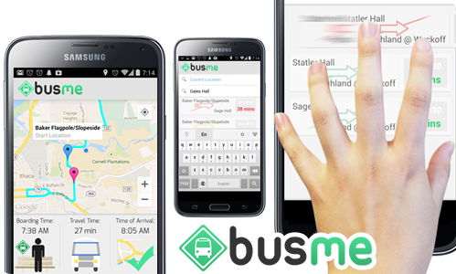

Hi my name is George Ding and I am a student at Cornell University pursuing a bachelors degree in Computer Science. As of now I have just finished my freshman year along this track–I attended Stuyvesant High School in New York City previous to this. I am incredibly passionate about the development of the most widely shared commons, the internet, and feel excited as heck to be a part of this development. I am particularly interested in the programming of social web apps/mobile apps and the theory behind high level maths/computer science. I also do a bit of graphics design in Adobe Photoshop and Adobe Illustrator. Aside from all of the formal stuff I enjoy working out in the gym, playing basketball, watching movies with my family, and playing computer games. I also debated in high school so I love engaging in challenging discourses, arguing with people, and reading philosophy.
gd264@cornell.edu 718-813-2548

Busme was the hack I worked on at BigRedHacks with my colleagues Hong Jeon, Brian Bao, and Jeffrey Terry. Busme is an innovative way to track buses without GPS. It crowdsources location data and uses a machine learning algorithm to show users which bus they want when they want it. It tries to change the way you look at public transportation in Cornell. We also wrote an API that parses all of the bus schedules on the TCAT website and open sourced it to the public. The app also has a heavy focus on user experience so it has a very sleek UI that is inspired by Google Now. We got through a lot of what we wanted to do but still did not finish everything. The app is missing the crowdsourced location tracking and machine learning which we plan on implementing in the near future. The repo is currently not public but will be soon!
The Cornell CSA Website is a sleek and intuitive web application for Cornell University's Chinese Students Association. It is built using javascript jquery, and bootstrap 3. The design is super responsive and made to fit a single page for easy user viewing. The website relies on node.js and MongoDB to power its back-end. The website fetches the most updated member information from a database and displays it on the website. Executive board members of CSA also have web privileges to easy modify existing information in the database using a secure page on the server with a GUI. Users can also upload content to the site such as photos to update their information in the database.
HongSleepJeon is an Android app/game based on one of my colleagues, Hong Jeon. The goal of the game is to help keep Hong awake in certain Cornell lectures by tapping and activating brain neurons before the quickly disappear off of the screen. The game has unique level designs with pre-coded sequences of neurons and also an arcade mode where the neurons will appear randomly for an extended period of time. The arcade mode will implement a machine learning algorithm to try to predict user tapping patterns on the screen and spawn neurons away from these areas to make the game harder. The repo is not public yet but will be soon!